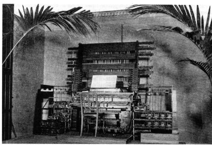
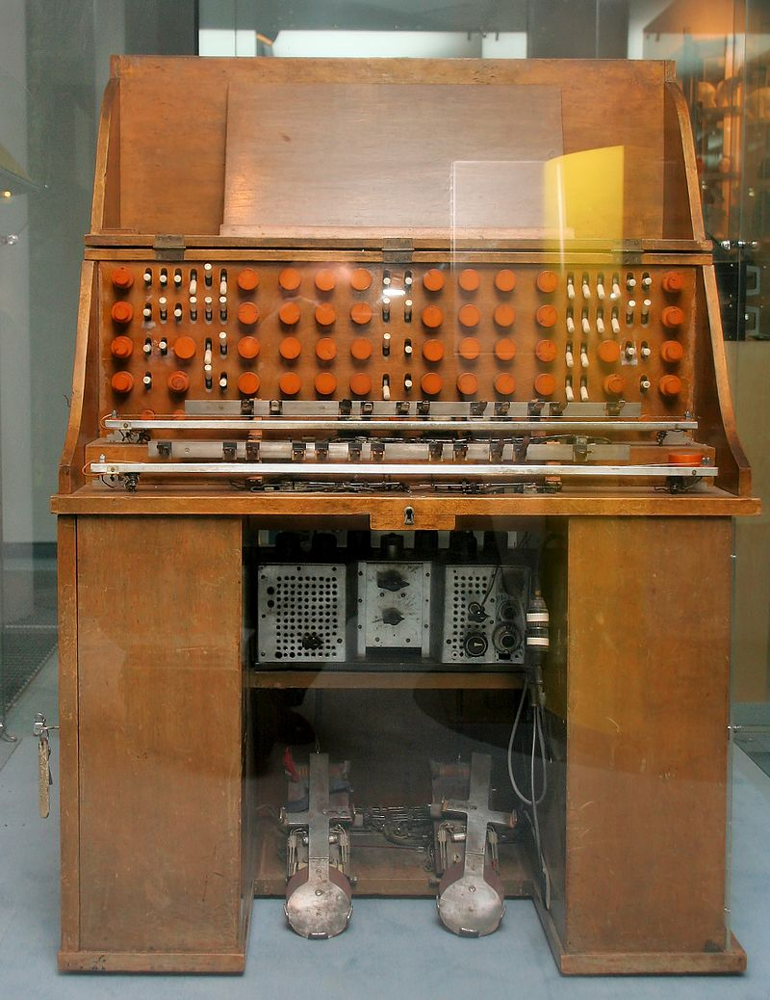
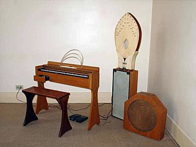
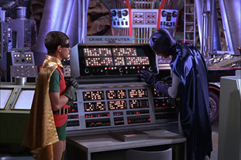

This webpage is dedicated to the history of synthesizers.
Precursors To Synthesizers

Teleharmonium
This was an early electric organ created by Thaddeus Cahill in 1896.1
It used tonewheels to generate musical sounds as electrical signals.
This process was done through additive synthesis, which adds sine waves together.

Mixtur-Trautonium
This is a monophonic electronic musical instrument made in 1929 by Friedrich Trautwein.
It features a manual which is made of a resistor wire over a metal plate, which is pressed to create a sound.
Ondes Martenot

Ondes Martenot
This was an electronic musical instrument created by Maurice Martenot in 1928.
This instrument was inspired by the accidental overlaps of tones between military radio oscillators.
User Input Section
Synth History Quiz
Buttons To Manipulate Page

Results for .html() button:
Results for .text() button:
Results for .attr() button: